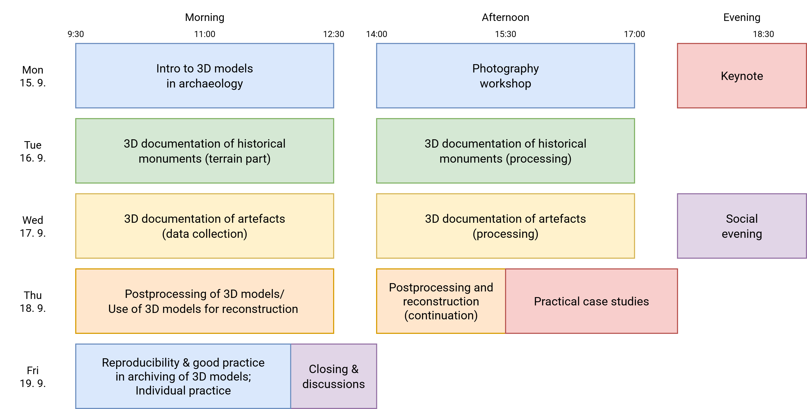

Training school programme

Day 1: Introduction to 3D Models in Archaeology and Photogrammetry
The first day of the summer school will focus on introducing the fundamental principles of 3D in archaeology. The morning session will feature an introductory lecture covering photogrammetry and the broad spectrum of applications for 3D models in archaeological research. In the afternoon, participants will transition to a practical workshop on photography basics, as high-quality images are crucial for generating precise 3D models. The evening will culminate with a keynote by Dr. Lenka Starková, delving into spatial archaeology in conjunction with 3D modelling.
Keynote: Scanning the Past: Photogrammetry, LiDAR, and HBIM in Archaeology and Heritage Care
This lecture explores the current possibilities of 3D documentation of cultural heritage through photogrammetry and laser scanning. It presents a wide range of tools—from LiDAR tablets and mobile or static scanners to aerial and terrestrial photogrammetry—and demonstrates their practical applications in documenting archaeological sites and historic buildings. Special attention will be given to the integration of these datasets into HBIM (Historic Building Information Modeling), which opens new opportunities for the management and preservation of heritage assets. The lecture will provide both an overview of technological trends and concrete examples from practice.
Day 2: 3D Documentation of Standing Historic Monuments
Day two will take participants directly into the field. The morning will be dedicated to the practical documentation of standing historic monuments, allowing attendees to gain valuable hands-on experience with data collection in a real-world environment. In the afternoon, the focus will shift to the processing of the collected data, where participants will learn how to transform photographs into accurate 3D models.
Day 3: 3D Documentation of Artefacts
The third day will build upon the previous day’s experiences, but with a focus on smaller objects. The morning session will again be dedicated to photographing archaeological artefacts for their 3D documentation. The afternoon will then see participants engaging in the processing and optimization of this data acquired from artefact documentation.
Day 4: Post-processing, Reconstruction, and Practitioner Insights
Day four will delve into more advanced techniques. The morning and part of the afternoon will be devoted to the post-processing of 3D models and their utilization for the reconstruction of past realities. Participants will learn how to refine, visualize, and interpret these models. The late afternoon will feature a session of short lectures from various experts in the field, who will present concrete case studies and share their practical experiences with the application of 3D models in archaeological practice.
Day 5: Reproducibility, Archiving, and Individual Practice
The final day of the summer school will be crucial for ensuring sustainability and scientific integrity. The morning session will cover reproducibility and good practice in the archiving of 3D models, which is essential for future data utilization and research transparency. The day will also include dedicated time for individual practice, allowing participants to reinforce their newly acquired skills on personal projects or focus on areas of particular interest.